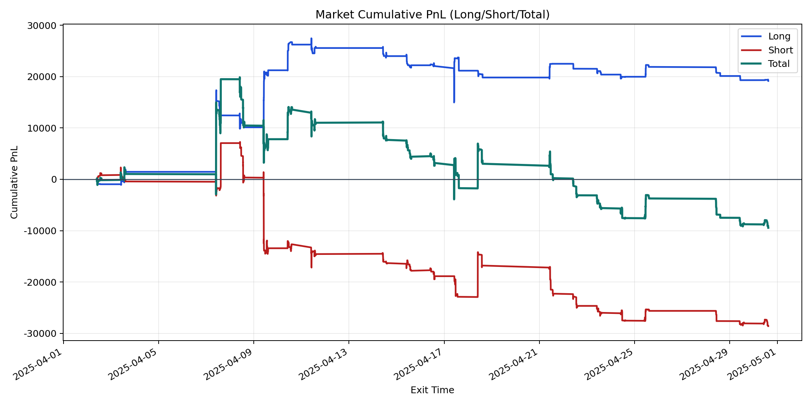
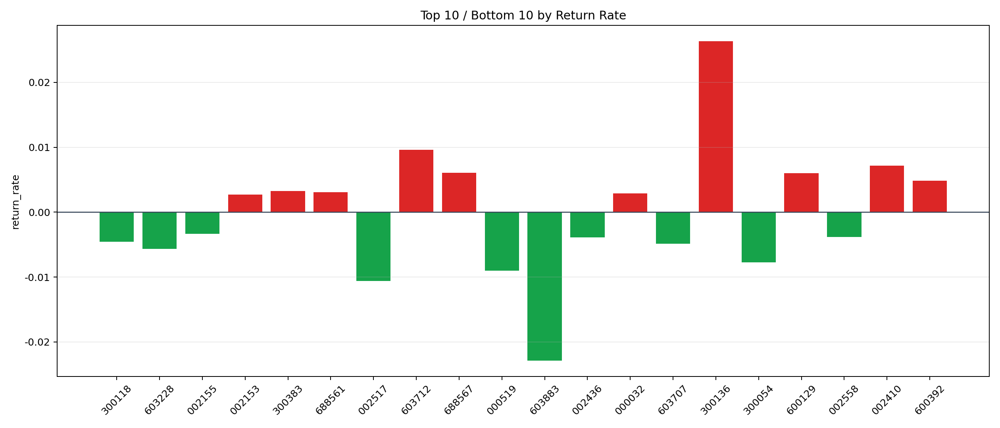

| repo_root | /home/haoranyou/data/output/dynamic_AUM_TAKER_index500 |
|---|---|
| period_months | 1 |
| period_label | 2025-04-02_to_2025-04-30 |
| start_time | 2025-04-02 09:46:32 |
| end_time | 2025-04-30 14:45:17 |
| n_trades | 3318 |
| n_symbols | 55 |
| total_pnl | -9442.995099999835 |
| long_total_pnl | 19164.020000000226 |
| short_total_pnl | -28607.015100000062 |
| total_entry_notional | 59639784.0 |
| long_entry_notional | 24313580.0 |
| short_entry_notional | 35326204.0 |
| total_return_rate | -0.0001583338246161293 |
| long_return_rate | 0.0007882023132751419 |
| short_return_rate | -0.0008097958982516226 |
| top_symbols_by_return | ["300136", "603712", "002410", "688567", "600129", "600392", "300383", "688561", "000032", "002153"] |
| bottom_symbols_by_return | ["603883", "002517", "000519", "300054", "603228", "603707", "300118", "002436", "002558", "002155"] |

